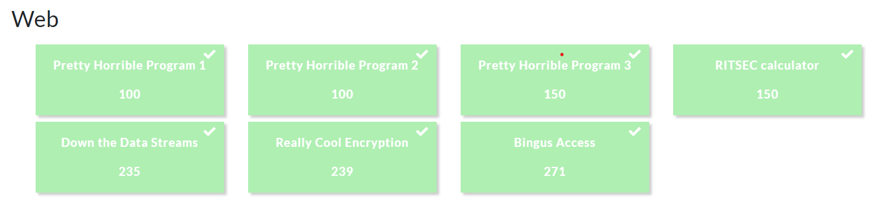
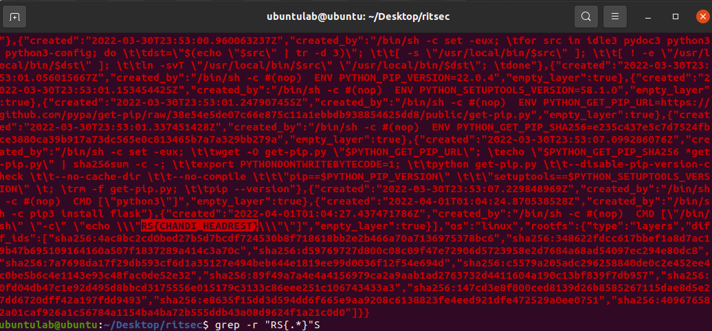
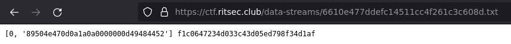
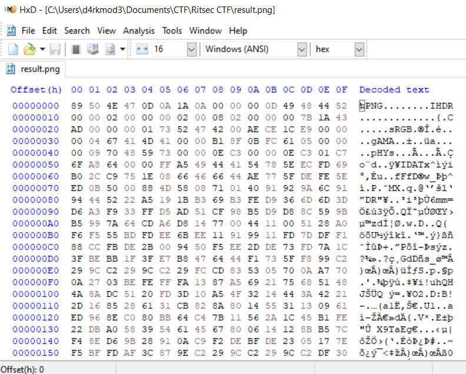

RitsecCTF 2022
Lời mở đầu
- Giải này hơi dễ so với rating 3x
- Mình học được 1 số thứ hay ho liên quan đến ftp protocol
- Mình chỉ viết writeup 3 bài mà mình cảm thấy khá thú vị
Web(7/7)

Really Cool Encryption
Bài này cho phép chúng ta nhập vào 1 input bất kì và in ra base64 encode của input đó.
Lúc đầu, mình thử fuzzing 1 số thứ liên quan đến SSTI như {{7*7}}, {% if ... %}, ... và nhận thấy rằng chall không có vuln ssti.
Fuzzing 1 lúc, mình nhận ra nếu input chứa dấu “(” hoặc “)” thì sẽ không in ra gì cả.
Mình quyết định bruteforce các kí tự printable để xem hành vi xử lí của input.
Kí tự . và ~ trả về 1 output base64 có độ dài khác thường, cụ thể dấu . sẽ trả về Dockerfile docker-compose.yml ezpwn.py flag templates
và dấu ~ sẽ trả về /home/bruh.
Dựa vào hành vi xử lí này, mình đoán đoạn code ở server sẽ thực hiện câu lệnh echo trong system.
Ok, để confirm thì mình sử dụng input $(ls) và ở server trả về
Dockerfile docker-compose.yml ezpwn.py flag templates
Lấy flag thôi nào, $(cat flag). Khoan, dừng khoảng chừng là 2s, lúc mình cat flag thì output trả lại “haha, you’re not done yet”.
Lúc mình grep “RS{” trong thư mục “/tmp” thì có được 1 troll flag của ai đó và 1 real flag kèm lời nhắn chửi AD ra đề guessing (thiệt là thú zị) :)).
Sau khi kết thúc giải thì mình hỏi author thì author bảo là flag nằm trong docker image.
Okay, Kéo image về máy bằng câu lệnh
docker pull youngbaofeng/google-image-search-pretext:latest
Lưu image này sang file nén bằng:
docker save youngbaofeng/google-image-search-pretext:latest -o Ritsec_rce.tar
Giải nén:
tar -xvf Ritsec_rce.tar
Grep:
grep -r "RS{.*}"
Flag:

RS{CHANDI_HEADREST}
Down the Data Streams
Bài này bắt đầu bằng 1 đường dẫn /{filename}.txt.

Magic bytes của loại file png 8950 4e47 quen thuộc trong dãy 89504e470d0a1a0a0000000d49484452

Mình đoán dụng ý người ra đề muốn chúng ta khôi phục lại bức ảnh gốc, đây là 1 chall kiểu mix giữa web-forensic, mình thấy khá thú vị.
Nhìn vào nội dung file txt, ta thấy quy luật sau:
[offset, bytestring] nextpath
Truy cập vào {nextpath}.txt ta được nội dung của chunk tiếp theo. Biết quy luật rồi thì ta giải quyết thôi :v
(P/s: Để tối ưu hoá code thì mình sử dụng session thay vì tạo mới request qua mỗi vòng lặp, như vậy tốc độ request sẽ nhanh hơn)
from flask import session
import requests,re
url = 'https://ctf.ritsec.club/data-streams/'
stream = '6610e477ddefc14511cc4f261c3c608d'
_data = [""] * 100000
s = requests.session()
def splitValue(txt):
offset = re.findall(r"\[(\d+)", txt)[0]
bytestring = re.findall(r"'(.*?)'", txt)[0]
nextstream = re.findall(r"\]\s(.*)", txt)[0]
return int(offset,10),bytestring,nextstream
def solve():
while 1:
try:
global stream, _data
r = s.get(url + stream + '.txt')
print(url + stream + '.txt')
offset,bytestring,nextstream = splitValue(r.text)
_data[offset] = bytestring
stream = nextstream
except Exception as e:
_data = "".join(_data)
f = open('result.txt', 'w')
f.write(_data)
f.close()
print(e)
exit()
solve()
Bước cuối cùng ta mở file result.txt coppy bytestream và paste vào HXD

Bài này mình tốn tận 45 phút để get hơn 14000 request :))
Flag:

RS{81ngu5_w3b_53rvic3s}
Bingus Access
Bài này khi ta nhấn vào hình con mèo nó sẽ redirect đến trang info.html
Trong file này có 1 hint rất quan trọng
You wont stop yoinky sploinky, heres a hint for you: you know i made a url get parameter "file", but it is sort of "restricted", but I also have ftp and I log stuff, so no yoinky sploinky there.
Như vậy param ?file={filename} có chức năng cho phép chúng ta chạm đến các file khác trong hệ thống.
Thử 1 số trick với LFI mình đã không thành công. Bị stuck khoảng chừng 1 tiếng thì mình nhận ra rằng đoạn description của bài có nhắc đến apache logs.
Kết hợp với hint FTP mình gởi query như sau:
?file=/var/log/vsftpd.log
Trong file này trả về toàn bộ log đăng nhập của user lúc user đăng nhập vào thông qua protocol FTP (Thông tin bao gồm tên, IP, Mac address).
Đây là lúc magic xảy ra :)), mình login thử với credential như sau:
host = ctf.ritsec.club:2121
username = <?php echo "hello"; ?>
password = d4rkmod3ontheland
Query đến ?file=/var/log/vsftpd.log và ta có được chữ hello thay vì <?php echo "hello"; ?>
Kết luận, LFI log poisioning.
Login với username là <?php system('cat /flag.txt'); ?>, mình có được flag:
RS{B1NGU5_FL4G}